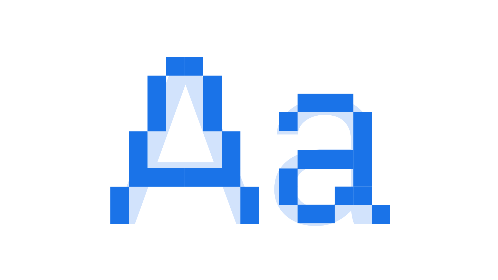

Hinting
By Google Fonts Knowledge contributors · Google Fonts Knowledge.
Original article · Source on GitHub · CC BY-SA 4.0. Text, illustrations and existing credits reproduced from the licensed Knowledge repository. Open Shelf adapted the layout and links; these adaptations are also CC BY-SA 4.0. No endorsement implied.
Hinting is the process of including programmatic data in a font file to help text rendering software represent a typeface legibly at small sizes, on low-resolution screens.

Until recently, with the arrival of high-resolution displays, hinting was a considerable concern when working with type on screen. 72dpi monitors were incapable of rendering the subtleties of type at small sizes, and hinting instructions were required to offer the rasterizer “hints” about which pixels to draw the type on.
Anti-aliasing technology improved the look of this rendering by allowing the software to define whether a pixel would be on (0; i.e., black), off (255; i.e., white), or any value in between. These grey pixels would soften the harshness of the black and white bitmaps. A similar technology called subpixel antialiasing allowed for only part of the pixel (the red, blue, or green component) to be turned on, thus achieving a similar effect with color.
Including hinting instructions within a font is generally recommended; however, because of the ubiquity of hi-res displays, it’s less of a concern today than it once was.